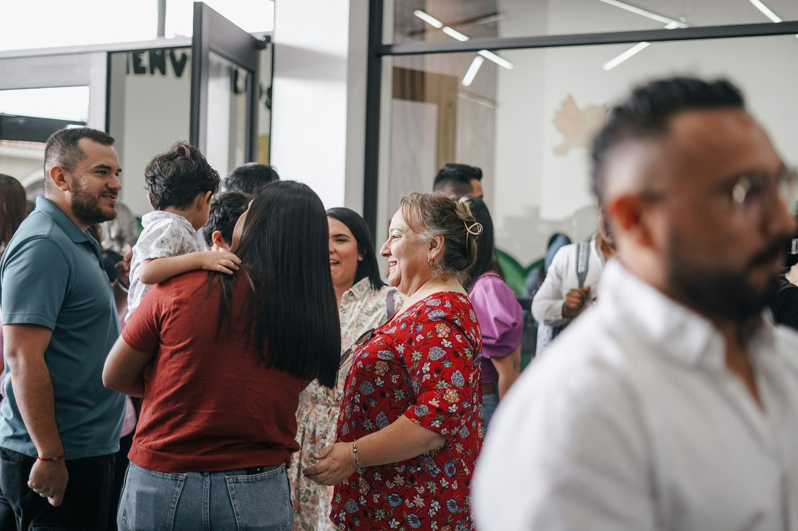

Verified Local
A real business with a reviewed physical presence near the listed base.
How it works
Verified people and places for your new base, all in one place — so a new station feels workable from day one, not month six.
A new base, and zero local contacts to start from.
Browse your new base before you even arrive.
All verified. All in one place.
Gates, MWR, childcare, ACS
Vetted and military-friendly
Milspouse-verified badge
MWR, FRG, spouse clubs
Settled on day one, not month six.

Every badge uses the same documented criteria on every listing, so a signal means the same thing everywhere.
A real business with a reviewed physical presence near the listed base.
Ownership status verified through documentation or a trusted partner.
Recognition for early verified businesses that helped build the first useful directory.